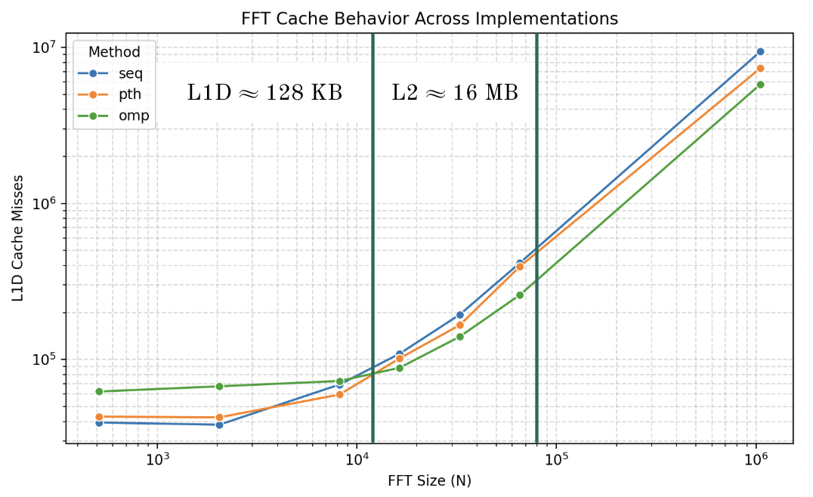
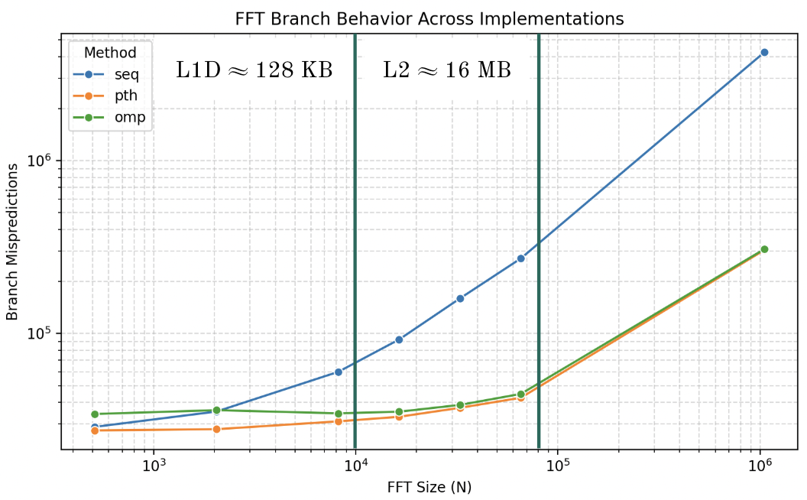
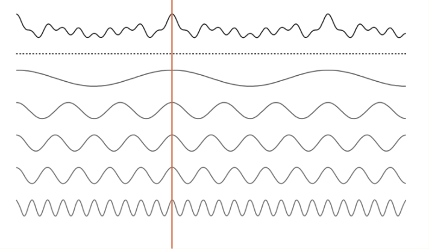
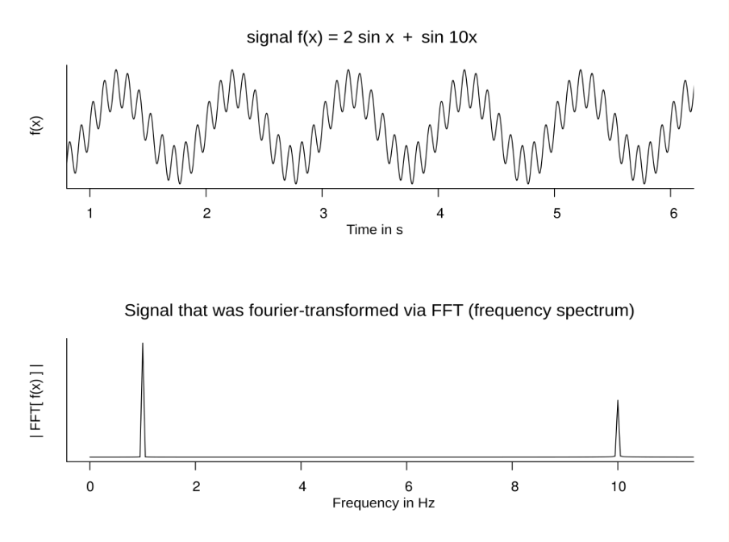

Parallel FFT¶
Overview¶
Performance Analysis of Parallel FFT Implementations.
flowchart LR
input["Time-Domain Signal<br><br><img src='/assets/code/fft/in.png' width='60'/>"]
fft[FFT]
output["Frequency-Domain Components<br><br><img src='/assets/code/fft/out.png' width='60'/>"]
input --> |input|fft --> |output|outputParallelFFT implements and evaluates multiple parallelization strategies for
the Cooley-Tukey Fast Fourier Transform (FFT) to study the performance tradeoffs.
A sequential baseline is compared against OpenMP, POSIX Threads (pthreads),
and C++ std::thread variants, with a focus on scalability, memory
behavior, and microarchitectural efficiency.
Performance is evaluated across increasing input sizes and thread counts, analyzing runtime, speedup, cache behavior, and branch behavior to highlight how each threading model interacts with modern CPU architectures.
See the What is the FFT section below for a brief primer on
the Fast Fourier Transform and its use cases.
I have another project that shows the FFT in action, transforming speech into
feature-rich frequency bins for a simple FPGA Speech Recognizer!
FFT Implementations:
seq- Sequential baselineomp- OpenMPpth- POSIX Threads (pthreads)cth- C++std::thread
System Configuration
% sysctl -a | grep cache
...
hw.perflevel0.l1icachesize: 196608
hw.perflevel0.l1dcachesize: 131072
hw.perflevel0.l2cachesize: 16777216
hw.perflevel1.l1icachesize: 131072
hw.perflevel1.l1dcachesize: 65536
hw.perflevel1.l2cachesize: 4194304
...
hw.cachelinesize: 128
hw.l1icachesize: 131072
hw.l1dcachesize: 65536
hw.l2cachesize: 4194304
...
- Apple M2 (ARM64 Silicon)
- Cores:
- 10 total
- 6 performance
- 4 efficiency
- Cache (perf-cores):
- L1I: 192 KB
- L1D: 128 KB
- L2: 16 MB
Results¶
Vertical lines approximate cache expenditure.
Runtime 
Speedup 
Cache Misses 
Branch Mispredictions 
Runtime vs. Cache Misses 
Speedup vs. Thread Count 
Key Components¶
FFT Implementations¶
seq::fft - sequential baseline
omp::fft - parallel OpenMP
pth::fft - parallel pthreads
cth::fft - parallel C++ standard threads
Benchmarking¶
While basic metrics such as runtime and speedup can be derived from source code,
the microarchitectural metrics such as cache or branch behavior require additional
benchmark harnesses such as external scripting or profilers. Given my aforementioned
system configuration, I used Apple Instruments
to access data provided by the PMUs.
It proved to be less convenient than Linux's perf CLI tool,
but neither virtualization nor emulation provided sufficient access to the PMUs.
What is the FFT¶
FT- Fourier TransformDFT- Discrete Fourier TransformFFT- Fast Fourier Transform
The FFT is an efficient algorithm for computing the DFT, a discrete version of the FT.
That is, the FFT is an efficient algorithm for converting from the time-domain to the frequency-domain.
The FT is a transform that maps an input function to another function that describes
the extent (magnitude) to which various frequencies are present in the input function.
That is, the FT decomposes a signal into its corresponding frequency components.
Example
I press 5 notes on a piano, making a chord.
The chord is a single composite frequency containing 5 pure frequencies.
An untrained ear hears the chord as one single sound despite the 5 notes.
However, when we pass it through the FT, it is able to disambiguate which 5 notes I pressed.
This is further illustrated in the figure below.
The idea behind the brute force implementation of such an algorithm is to simply correlate all your frequencies with the input signal - \(O(N^2)\).
The FFT is able to reduce this to \(O(N \log N)\) via a DPish approach to avoid recomputing overlapping complex exponentials/partial sums in a divide-and-conquer combine fashion.
This divide-and-conquer combine approach stems from the observation that the DFT of a length-N signal can be decomposed into two length-\(\frac{N}{2}\) DFTs of the even-indexed and odd-indexed samples (with appropriate twiddle factors).

Example decomposition of an input signal (e.g., a chord) into its 5 corresponding
pure frequencies.
A given point in the input signal is the sum of the corresponding
point in the derived pure frequencies.

Another example, illustrating the conversion from the time to the frequency domain.
Notice the peaks at 1 and 10 Hz corresponding to the 1x and 10x components of the input signal.
This is my attempt at summarizing the hours of information I learned from the following key resources:
todo
I want to make a diagram for the bit reversal step of the iterative FFT.
To see the FFT in action, check out SmallTalk - my other project utilizing the FFT for feature extraction in a simple FPGA-driven Speech Recognizer.
Note
Typical use cases of the FFT involve smaller input sizes, typically around 512, 1024, or 2048.
As demonstrated in this project, 1024-point FFTs never witness the advantages of parallelism as implemented here (i.e., performing butterfly operations in parallel) because thread management amortizes the overhead.
For this reason, the FFT is almost never parallelized in this fashion. Instead, multilpe FFTs are parallelized. In multi-channel audio processing, or in multi-channel image processing (e.g., RGB), you must compute a 2D FFT on each channel. In practice, the FFT is parallelized per-channel.
However, when implemented in hardware, the FFT does benefit from butterfly-level
parallelization.
Check out my project SmallTalk
to learn more about this!